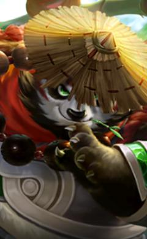
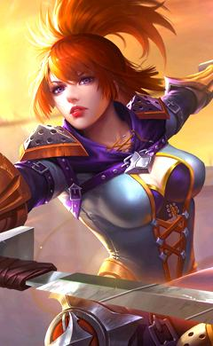
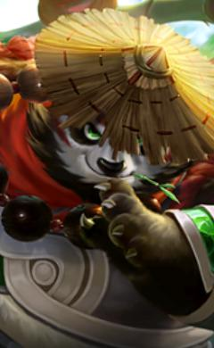
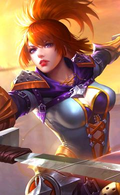

Hero Name: Miya
Hero Type: Marksman
Movement Speed: 240
HP: 2504
Special Skill: Turbo Stealth
Summary:
Miya was born in the Temple of the Moon and studied hard to one day become a worthy sacrifice to the Moon GOD.
Miya is a cute and beautiful hero marksman but quite deadly.
With his skill, the enemy in an instant can feel miserable and gain defeat.
Hero Name: Alucard
Hero Type: Fighter
Movement Speed: 260
HP: 2821
Special Skill: Fission Wave
Summary:
Alucard is a very strong hero, when he is sufficiently farmed, especially when he is ahead in farm.
He is able to burst down the squishy enemy heroes within mere seconds and yet still have the ability
to continue fighting in fights with the low cooldown of his skills, bringing the team to victory if played right.
Hero Name: Vexana
Hero Type: Mage
Movement Speed: 245
HP: 2481
Special Skill: Cursed Oath
Summary:
Vexana used to be the gentle and kind-hearted queen of that kingdom.
But due to the heinous deeds of an evil being, Vexana was coaxed to follow the path of darkness.
To this day, Vexana lives on—not as benevolent queen, but as a malevolent demon queen of darkness.
She is known as an accursed being who wields the power of curses.
She can summon darkness on a whim and lay waste to everything in her sight.
Hero Name: Akai
Hero Type: Tank
Movement Speed: 260
HP: 2769
Special Skill: Hurricane Dance
Summary:
Akai the Panda Warrior is not just an ordinary, cuddly, chubby panda.
He is a master of prominent martial arts techniques!
With his bulky physique and his outstanding physical prowess,
he can soak up damage while delivering powerful blows himself.
As a hero, he is a great warrior with offensive, defensive, and supportive skills at his disposal.
Hero Name: Fanny
Hero Type: Assassin
Movement Speed: 265
HP: 2526
Special Skill: Cut Throat
Summary:
Steel Cable is the skill that affords Fanny her unique identity as the Blade Dancer.
Because of this skill, Fanny is the hero with the most mobility in the game.
In fact, she doesn't even have to equip shoes or boots because she has this skill.